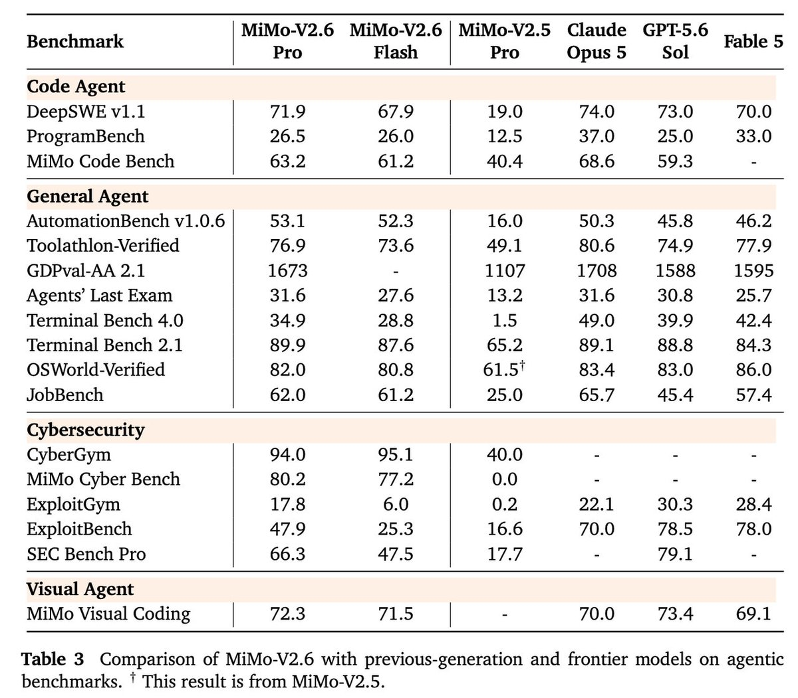
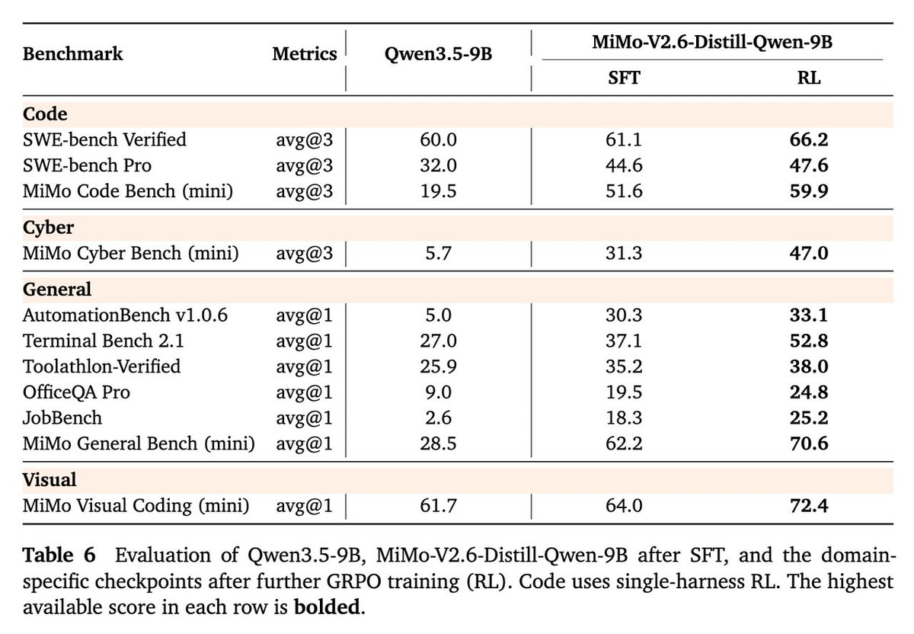
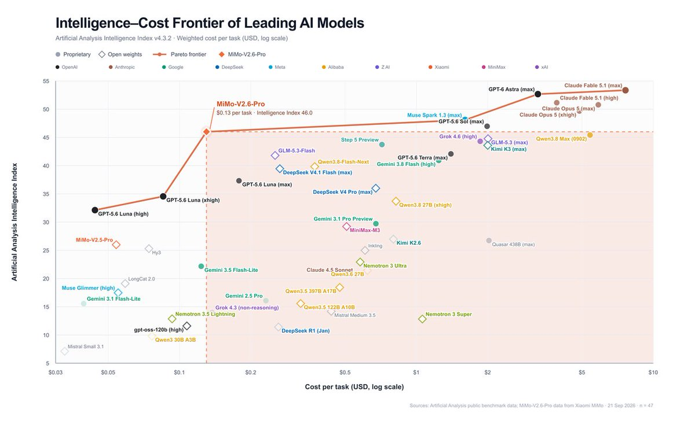
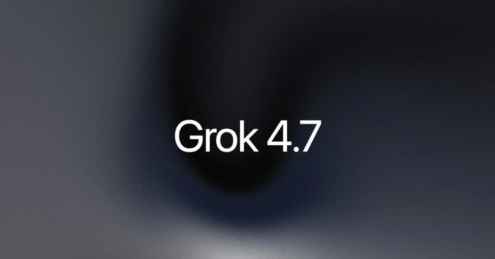
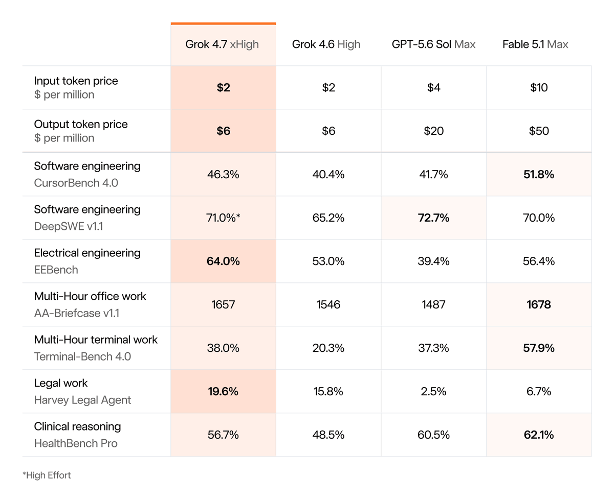
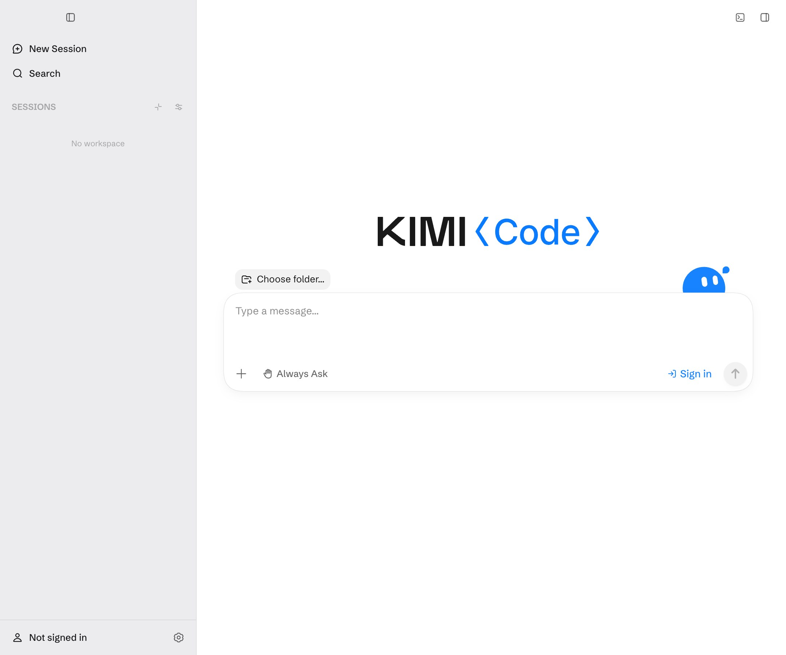
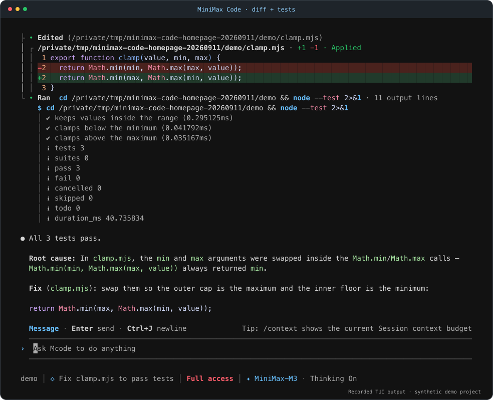

AI Intelligence Daily · 2026-09-22
专栏一｜新闻
1. 小米 MiMo-V2.6：旗舰全模态开源 + Desktop/会员同发
事实
@XiaomiMiMo 发布 Introducing Xiaomi MiMo-V2.6 — Pro & Flash：两条全模态旗舰，强调 scaled RL；官方称 Pro 在多数 agent 评测上可比 Claude Opus 5 / GPT-5.6 Sol，AA Intelligence Index 约 46（开源最高档口径）。同串宣布开源 Pro / Flash 权重、MiMo-V2.6-Distill-Qwen-9B、技术报告、7K+ RL task environments、端到端 RL 框架与 composable mini-harnesses。更新日志 Model Release 署 2026-09-22；HF 集合 XiaomiMiMo/mimo-v26 可见 Pro-RL / Flash-RL / Distill（lastModified ≈ 2026-09-21T20:12Z）。架构约 1.02T total / 42B activated MoE、1M 上下文。产品面：官网「Desktop Is Now Live」；MiMo Desktop + membership 与 Pro/Flash 同发；MiMo-V2.6-Pro-UltraSpeed 宣称最高约 20× 输出速度；API 定价相对 V2.5 不变（约 $0.0036 / $0.435 / $0.87 per 1M cache-hit / miss / out）。互动量级约 3708 likes / ~249k impressions；HN 约 473 points。
判断
国内一线厂把旗舰开源 + RL/harness 资产公开 + Desktop/会员商业化绑在同一发布日——对 Agent 互联能力供给与 Work·Agent 引擎对照同时撞击。对标与 AA Index 属官方/第三方口径，以可调用 API、开源权重与自有回归为准。



官方 X Introducing · mimo.mi.com · MiMo-V2.6 · HF collection · HN
2. xAI 发布 Grok 4.7（Cursor / API / Coding Harness 当日可用）
事实
xAI 官方新闻稿 Introducing Grok 4.7：面向 coding 与 knowledge work；更长任务坚持、更仔细自检、新 safeguard stack；与 Grok 4.6 同价同速档（$2 / $6 per 1M in/out），另有约 2× 输出速度的 fast variant（约 2× 价格）。正文明确 available today 于 Cursor、Grok Build、Grok API、第三方 coding harnesses 及 model routers / cloud platforms。评测覆盖 CursorBench 4.0、DeepSWE、AA Briefcase、Terminal-Bench 等；安全侧强调 jailbreak/refusal 与 HackerBench。@SpaceXAI 同晚补发（约 2.4 万 likes / ~900 万 impressions）；HN 约 480 points。快讯 21:37 首页仍钉 Voice Transcribe；约 23:49 CST hero 已切 4.7。
判断
旗舰 coding-first 模型正式跨 Cursor / API / harness 可用。对 Work/Agent 引擎：当日可进对照表；原生「理解 Grok Bot harness」叙事是模型与运行时加深绑定的样本。


3. 月之暗面 Kimi Code Desktop 正式可用（漏扫补发）
事实
官方文档：Kimi Code Desktop 正式可用，把 Kimi Code CLI 的 Agent 核心做成图形客户端；支持 macOS（Apple Silicon / Intel）与 Windows。能力：本地 workspace、Goal / Plan / Swarm 多子代理、审批卡与三档权限（Always Ask / Ask When Needed / Never Ask）、Changes diff、内置终端，以及与会话绑定的内置浏览器（1.0.2 大改）。CLI 侧有 /desktop / kimi install-desktop。无会员则官方模型不可直接用，可接第三方 provider。窗内官方 X 无新 shipping 帖；触发线索是 HN 链到已存在文档。此前日报/快讯因未钉 Desktop changelog 漏收——按 MiMo 漏扫教训补发。
判断
一线厂 Work/Desktop Agent 正式客户端：本地文件 + 终端 + 浏览器 + 多 Agent + 权限门控，与 Work/Agent 引擎主线高度同构。

4. MiniMax Code：GH + npm 跟进至 v0.5.1
事实
MiniMax-AI/minimax-code 发布 v0.5.1（相对昨日 v0.5.0）：tar.gz + sha256；要求 Node 22.19+/24.2+/25/26；注明 Windows / live-service 验收未跑；内置 updater 跟随 npm。@minimax-ai/code latest=0.5.1。星标本轮约 ★1693（昨日约 1513）。官方 X 本窗无根帖——以 GH/npm 为准。
判断
开源 Coding Agent 的 pin/复现通道继续硬化；ACP Skills 菜单能力随 0.5.x 线延续。

5. 智谱 ZCode Desktop 3.14.1：电脑控制启动修复等
事实
官方中英文 changelog 同步 3.14.1（Released Sep 21, 2026）；全平台下载指向 v3.14.1。英文 Fixes 首条：Fixed an issue where Computer Control might fail to start。开源仓 URL / 第三方审计报告 / 隐私政策修订本窗仍未见。属信任事故后的修补跟进，非新能力面。原文 changelog 无独立新闻附图——本条不配图。
判断
CUA/电脑控制是 Desktop Agent 关键路径；版本化修复可核验，但开源与审计闭环仍 outstanding。
专栏二｜话题热议
1. MiMo-V2.6 开源旗舰双热（官方 X + HN）
官方 Introducing 帖约 3708 likes / ~249k impressions；HN 约 473 points。讨论核：开源权重、agent 对标口径、Desktop 同发。热度真实，且与产品 shipping 同日，不是纯情绪噪音。
2. Grok 4.7 跨平台可用热议（官方 X + HN）
@SpaceXAI 主帖约 2.4 万 likes / ~900 万 impressions；HN 约 480 points。另有 Vercel AI Gateway「Grok 4.7 至 9/27 四折」促销转发。coding-first 旗舰日的社区密度高。
3. Step 5 Preview 社区体感延续（近失）
开发者分享 Step 5 在 agent harness / 长程 coding 的体感帖，官方多回复「stay tuned」。不升格为新事件；继续盯 10/15 开源。
专栏三｜开源雷达
1. XiaomiMiMo MiMo-V2.6 权重与 RL/Harness 资产
HF collection 2026-09-21T20:36Z；Pro-RL likes≈138 / Flash-RL≈159 / Distill≈105（抓取快照）。旗舰全模态 + Distill + 技术报告 + 宣称 7K+ RL 环境与 mini-harnesses。建议：拆源码 / 读报告 / PoC harness。
2. MiniMax-AI/minimax-code → v0.5.1
小版本硬化。建议：安装复测。
3. Tencent/BrowserSkill / trycua/cua（热度延续）
BrowserSkill ★≈6338（仍 cli-v0.3.0）；cua ★≈25689。本窗无新于已报的正式产品 Release；作星标续观。
重点事件新进展
- MiniMax Code CLI：昨日 v0.5.0 → 今日 v0.5.1 GH+npm → 是（小版本）
- ZCode 3.14.x：3.14.0 → 3.14.1 Computer Control 启动修复；开源/审计仍无 → 是（补丁）
- MiMo Desktop：early access → 与 V2.6 同发「Desktop Is Now Live」+ 会员 → 是
- Step 5 / google/ax / Cursor / Muse / 小艺：ax 仍 v0.3.0；Cursor 仍 Sep10；Muse connectors 仍 404；小艺仍 0.7.0 → 否
- Qoder Credits：Sonus Credits「9/21–9/25 每日 4000」活动 → 是（促销额度）
今天正在形成的趋势
- 「模型开源」开始附带 Harness/RL 资产包（MiMo-V2.6）。
- Coding-first 旗舰以「进 Cursor / harness 当日可用」为发布定义（Grok 4.7）。
- 国内 Desktop Agent 产品面密集补齐（Kimi Code Desktop + MiMo Desktop Now Live）。
- 信任修复进入小版本节奏（ZCode 3.14.1）；开源与审计仍未闭环。
- 成本面板继续打组合拳（Qoder Sonus 日额度；MiMo「更强智能、同价」）。
对智能体互联网最值得吸收
- 把 harness / RL 环境当作一等公民公开（MiMo）。
- Desktop 内嵌浏览器 + 审批卡：人机委托边界产品化样本（Kimi；可与 MiMo Desktop 对照）。
对 Work / Agent 引擎最值得吸收
- 多 harness 混训 / You Only RL Once——对照自有评测是否过拟合单一循环。
- 发布即进 Cursor/API/harness（Grok 4.7）。
- Goal / Plan / Swarm + 权限三态（Kimi Code Desktop）。
值得继续跟踪
- MiMo-V2.6 — 权重/license；RL/mini-harnesses 可复现性；Desktop 权限；UltraSpeed 实机
- Grok 4.7 — Cursor 模型 ID/默认；API effort/fast；4.6 A/B；红队邀测
- Kimi Code Desktop — ≥1.0.2 实机；Swarm/浏览器；会员与 BYOK
- ZCode 开源 + 第三方审计 + 3.14.1 复测
- Qoder Sonus 日额度至 09-25；Flash 限免至 09-30 23:59:59 +08
- Step 5 Preview · 10/15 开源；google/ax / Muse connectors / Cursor / MiniMax Desktop / 小艺 0.7.0
价格 / 订阅雷达
- MiMo-V2.6：API 定价相对 V2.5 不变；约 $0.0036 / $0.435 / $0.87 per 1M；Claw 限时 ¥14.9/月（以官网为准）。
- Grok 4.7：$2 / $6 per 1M in/out（同 4.6）；fast variant 约 2× 价换 2× 速度。
- Vercel AI Gateway × Grok 4.7：40% off 至 2026-09-27。
- Qoder Sonus Credits：09-21 至 09-25 每日 4000（日清零）；Flash 限免至 09-30 仍有效。